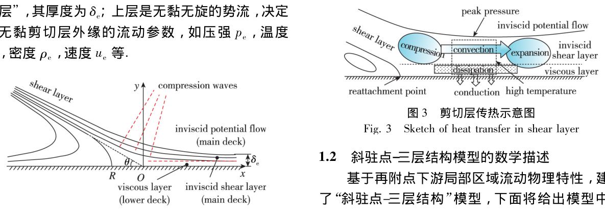
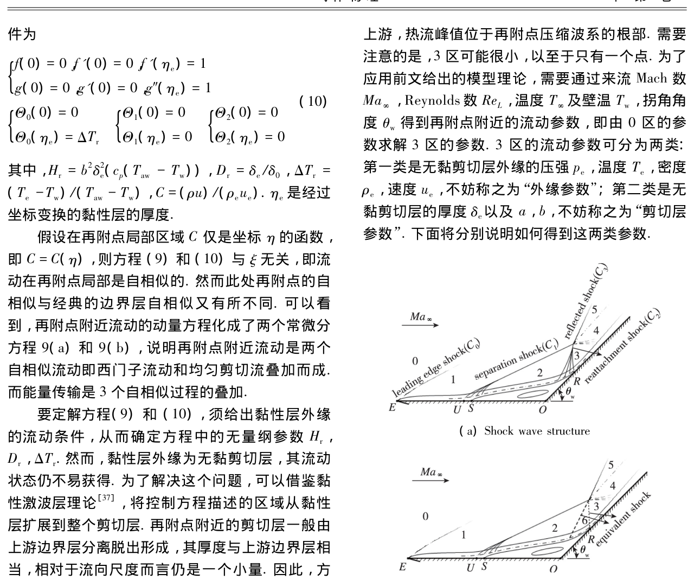
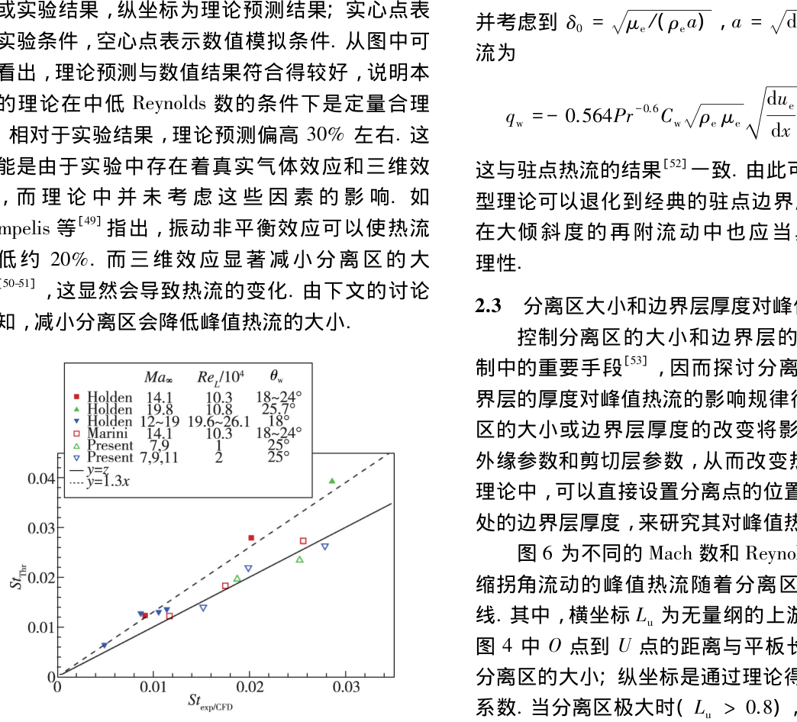
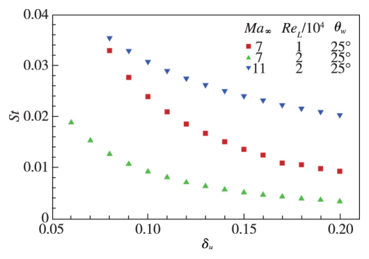

01中文摘要
具有大尺度分离区的高超声速分离-再附流动会在再附点后产生极大的热流峰值。本文分析再附点后局部流动与传热特征，提出斜驻点-三层结构模型理论框架，并将其应用于中低雷诺数高超声速压缩拐角流动。作者给出再附点局域流动外缘参数的工程求解方案，计算对应峰值热流，并与数值结果对比验证。最后利用该理论研究分离区大小和分离时边界层厚度对峰值热流的影响规律，为分离-再附流动峰值热流预测提供理论依据。
原始摘要（英文/原文）
具有大尺度分离区的高超声速分离-再附流动中会在再附点后产生极大的热流峰值.通过分析再附点后局部区域的流动和传热特征,提出了斜驻点-三层结构模型理论框架.继而将此理论框架应用于中低Reynolds数的高超声速压缩拐角流动,提出了其再附点局域流动的外缘参数的工程求解方案,给出了对应的峰值热流值,并与数值计算结果做了对比验证.最后,利用该理论研究了分离区的大小和分离时边界层的厚度对峰值热流的影响规律.
02阅读说明
文章类型：理论建模 + 数值验证（DSMC）研究，辅以他人 CFD 与实验数据对比。材料范围：bundle 552 行（PDF 10 页，期刊 p.10-19）已全部读至末尾；另用 PDF p.3-6 核对式(1)-(14)、表1 的符号与数值。图表可读性：图1-图7、表1 均完整；PDF 渲染时中文文字层缺失，但公式符号、图注英文与数字可辨；式(4)、(9) 在文本层严重错位，已按页面图像核对。信息完整度：推导链完整（式1-14），14 个验证工况齐全，但 α=0.8、cδ 系数、二次温度剖面等属经验/假设封闭，文中未做不确定度预算。提取口径：公式以 PDF 页面核对结果为准；未给出者写“文中未提及”。 文章类型：期刊
03一句话核心与三句话摘要
构建斜驻点-三层结构模型预测高超声速压缩拐角再附峰值热流，DSMC 验证偏差约 -15%~+7%。
- 问题与缺口：大分离再附流动的峰值热流可达无干扰时的 10~100 倍甚至数倍驻点值，但实验难以同时复现飞行焓与 Reynolds 数、CFD 预测不确定度大、传统热流-压强比拟式经验性强；三层结构理论需 Re>10^8 且难以处理大尺度回流区。 原文明确
- 方法与工况：提出“斜驻点-三层结构”模型（黏性层/无黏剪切层/无黏势流），经 Howarth-Dorodnitsyn 变换、类 Tooke 流函数与二次温度剖面化为 5 个常微分方程的自相似系统，并用压缩拐角 0~6 区激波结构与流量守恒给出外缘参数和剪切层参数；以 DSMC 在 Ma∞=7~11、ReL=(1,2)×10^4、θw=25°、T∞=60 K、Tw=300 K 下验证。 AI概括
- 结论：理论 St 与本文 DSMC 相差 -15.0%~+7.4%，较 Holden 实验系统性高约 30%；b=0 时退化为经典驻点边界层理论；减小分离区或增大干扰起点边界层厚度均可降低峰值热流，低 Mach 数与低 Reynolds 数下效果更显著。 AI概括
04核心内容清单
| 要点 | 类型 | 重要性 | 原文依据 | 属性 |
|---|---|---|---|---|
| 再附峰值热流可达无干扰 10~100 倍，工程上 Re 仅 10^4~10^5 且以大尺度分离为主；现有比拟关联式经验性强、物理本质不明，三层结构理论需 Re>10^8 且难处理大回流区，构成研究缺口。 | 问题与缺口 | A | PDF p.1-2（引言） | 原文明确 |
| 提出“斜驻点-三层结构”模型：黏性层（cδδ0）+ 无黏有旋剪切层（δe）+ 无黏无旋势流；用斜驻点流动（Hiemenz 流 + 均匀剪切）模化整个再附剪切层。 | 模型框架 | A | PDF p.2-3，图1、图2 | 原文明确 |
| 传热机制：压强峰值点上游压缩做功使内能增加，下游膨胀使内能转为动能，形成贴近壁面的高温区并产生高壁面热流；再附区传热必须同时考虑法向对流、耗散与流向对流。 | 机理 | A | PDF p.3，图3 | 原文明确 |
| 数学封闭：Howarth-Dorodnitsyn 型变换(5)+类 Tooke 流函数(6)+二次温度剖面(7)+排移修正(8)，将问题化为式(9a-e) 五个 ODE 与式(10) 边界条件，C=C(η) 时局部自相似。 | 推导 | A | PDF p.4-5，式(5)-(10) | 原文明确 |
| 峰值热流由无量纲壁面温度梯度给出：qw≈-Θ0'(0)(kwρw/(δ0ρe))(Taw-Tw)，只需数值解出 Θ0'(0)。 | 结果公式 | A | PDF p.5，式(11) | 原文明确 |
| 压缩拐角外缘参数工程解法：0~6 区用无黏激波理论，2→3 区间简化为两道斜激波，θ6=(θw-θ2)α+θ2 且 α=0.8；剪切层厚度由流量守恒 δe=ρuuuδu/(ρeue) 给出，b=ue/δe，a 由 tanθ=2a/b 以 θ=θw-θ2 确定。 | 外缘条件闭合 | A | PDF p.5-6，式(12)-(14)，图4 | 原文明确 |
| 与本文 DSMC 对比：5 个算例峰值热流系数误差 -15.0%~+7.4%，理论在中低 Re 下定量合理；与 Marini CFD 的 3 例误差 4.3%~6.6%，另 2 例达 33.7%、39.5%。 | 验证 | A | PDF p.6-7，表1、图5 | 原文明确 |
| 与 Holden 实验对比：5 例理论均偏高（+18.2%~+46.0%，约 30%），作者归因于实验中的真实气体效应（振动非平衡可降热流约 20%）与三维效应（减小分离区）。 | 验证/偏差 | A | PDF p.7，表1、图5 | 原文明确 |
| b=0 极限退化为经典驻点边界层：Θ0'(0)=0.564Pr^0.401，qw=-0.564Pr^-0.6 Cw√(ρeμe due/dx)(haw-hw)，与驻点热流理论一致，说明模型可拓展性。 | 极限检验 | A | PDF p.7（§2.2） | 原文明确 |
| 分离区越小峰值热流越低，Mach 数越低效果越显著；Lu>0.8 时前缘激波干扰与分离激波干扰耦合，本文方案不适用。 | 参数规律 | A | PDF p.7，图6 | 原文明确 |
| 干扰起点边界层越厚峰值热流越低，在较低 Mach 数与较低 Re 下更显著；文中算例的分离时边界层厚度为 0.07~0.14。 | 参数规律 | A | PDF p.7，图7 | 原文明确 |
| 适用边界：完全分离、定常、二维、层流、量热完全气体、等温壁；未含真实气体、三维、湍流与非定常效应。 | 限制 | B | PDF p.2、p.7 | 原文明确 |
05引言：研究问题与领域缺口
【原文明确】作者从近空间高超声速飞行器的长时间巡航与机动需求出发，指出非流线型构型不可避免产生强激波-边界层干扰（SWBLI）并伴随分离与再附；再附点附近热流峰值可达无干扰时的 10~100 倍，甚至为驻点热流的数倍（PDF p.1，引言）。现有预测手段存在三方面不足：实验很难同时满足实际飞行的焓与 Reynolds 数条件；CFD 对峰值热流的预测仍有非常大的不确定度；工程上主要依靠热流-压强比拟关联式间接预测，不同模型的关联式需要不同拟合参数，带有强烈工程经验性质，物理本质不明（PDF p.1）。作者梳理两类早期理论：一是以 Lees、Nielsen 为代表的动量积分方法（Karman-Pohlhausen 方法的拓展，Klineberg 引入能量方程，Murphy 评估后认为只能预测弱干扰压强、无法准确预测热流，且需假设合理速度/温度剖面）；二是渐近展开的三层结构理论（Lighthill 两层结构概念；Neiland、Stewartson、Messiter 分别针对超声速分离、不可压平板后缘给出三层结构；Brown 拓展到高超声速；Rizzetta 引入能量方程；Daniels 类比到再附点）（PDF p.2）。作者指出三层结构理论的局限：引入极高 Reynolds 数假设（Re>10^8），在较低 Re 下不足；控制方程为隐式椭圆偏微分方程，求解难度不亚于 CFD；出现显著回流区时解可能不稳定，难以处理大尺度分离（PDF p.2）。工程更关心近空间飞行器较低 Re（10^4~10^5）与大尺度分离气动加热。李邦明首次引入斜驻点流动模化再附点附近干扰区无黏流动，但最终仍须借助热流比拟关联式计算峰值热流（PDF p.2）。本文目标即结合三层结构思想与斜驻点流动模型，构建新的模型理论框架，并针对压缩拐角流动给出再附点区外缘及斜驻点区参数的工程求解方案。适用边界在 PDF p.2 明确：仅考虑完全分离的定常二维层流流动，假设流体为量热完全气体。
06流动条件与几何构型
| 项目 | 数值/描述 | 依据 | 备注 |
|---|---|---|---|
| 流动假设 | 完全分离、定常、二维、层流；量热完全气体；等温壁 | PDF p.2（引言末段）、p.4（式7 前后） | 作者明确限定的适用范围 |
| 本文 DSMC 工况 1 | Ma∞=7，ReL=1×10^4，θ=25°，T∞=60 K，Tw=300 K | PDF p.6，表1 | |
| 本文 DSMC 工况 2 | Ma∞=9，ReL=1×10^4，θ=25°，T∞=60 K，Tw=300 K | PDF p.6，表1 | |
| 本文 DSMC 工况 3 | Ma∞=7，ReL=2×10^4，θ=25°，T∞=60 K，Tw=300 K | PDF p.6，表1 | |
| 本文 DSMC 工况 4 | Ma∞=9，ReL=2×10^4，θ=25°，T∞=60 K，Tw=300 K | PDF p.6，表1 | |
| 本文 DSMC 工况 5 | Ma∞=11，ReL=2×10^4，θ=25°，T∞=60 K，Tw=300 K | PDF p.6，表1 | |
| Re 参考长度 | ReL 以平板长度 L 为参考长度；L 的具体数值文中未提及 | PDF p.6（§2.1）、表1 | |
| Marini CFD 工况 A1 | Ma∞=14.1，ReL=103 668，θ=18°，T∞=88.88 K，Tw=297.22 K | PDF p.6，表1 | |
| Marini CFD 工况 A2 | Ma∞=14.1，ReL=103 668，θ=21°，T∞=88.88 K，Tw=297.22 K | PDF p.6，表1 | |
| Marini CFD 工况 A3 | Ma∞=14.1，ReL=103 668，θ=24°，T∞=88.88 K，Tw=297.22 K | PDF p.6，表1 | |
| Marini CFD 工况 B1 | Ma∞=14.1，ReL=103 860，θ=18°，T∞=88.88 K，Tw=297.22 K | PDF p.6，表1 | |
| Marini CFD 工况 B2 | Ma∞=14.1，ReL=103 860，θ=24°，T∞=88.88 K，Tw=297.22 K | PDF p.6，表1 | |
| Holden 实验工况 H1 | Ma∞=19.8，ReL=107 880，θ=25.7°，T∞=63.00 K，Tw=297.00 K | PDF p.6，表1 | |
| Holden 实验工况 H2 | Ma∞=11.68，ReL=247 245，θ=15°，T∞=64.56 K，Tw=297.22 K | PDF p.6，表1 | |
| Holden 实验工况 H3 | Ma∞=15.56，ReL=196 180，θ=18°，T∞=43.43 K，Tw=297.22 K | PDF p.6，表1 | |
| Holden 实验工况 H4 | Ma∞=18.86，ReL=261 093，θ=17.2°，T∞=35.51 K，Tw=297.88 K | PDF p.6，表1 | |
| Holden 实验工况 H5 | Ma∞=18.86，ReL=261 093，θ=18°，T∞=35.51 K，Tw=297.88 K | PDF p.6，表1 | |
| 参数研究范围（分离区） | Lu（O 到 U 距离/平板长度）在 Lu<0.8 内讨论；Lu>0.8 方案不适用 | PDF p.7，图6 | 图6 覆盖不同 Mach 数与 Reynolds 数，具体取值文中未逐一列出 |
| 参数研究范围（边界层厚度） | 干扰起点边界层厚度 0.07~0.14（归一化量，参考长度文中未说明） | PDF p.7，图7 |
07核心现象与关键参数
| 参数 | 定义 | 数值 | 关系/说明 | 依据 |
|---|---|---|---|---|
| St（峰值热流系数） | St=qw/(ρ∞u∞cp(T0-Tw))，T0 为来流总温 | 本文 DSMC 0.015 2~0.027 9；理论 0.012 9~0.026 2 | 用于与 CFD/实验的峰值热流无量纲对比 | PDF p.6-7，表1 |
| θ（斜驻点倾角） | 零流线与平板夹角；tanθ=-(v/u)|ψe=0=2a/b | 压缩拐角中取 θ=θw-θ2 | 式(2)，决定 a/b 之比 | PDF p.2，式(2)；p.6 |
| δ0（斜驻点边界层厚度尺度） | δ0=√(μe/(ρea)) | 由局部外缘参数计算，文中未给具体数值 | 式(3)；黏性层厚度取 cδδ0 | PDF p.2，式(3) |
| cδ（黏性层厚度系数） | cδ=c1+c2(γ+1)/2·Ma_e^2+c3Tw/Te | c1=-1.27，c2=0.15，c3=1.57 | 类比平板边界层参考温度法 | PDF p.4 |
| Hr | Hr=b^2δe^2/(cp(Taw-Tw)) | 由局部参数计算；b=0 时为 0 | 式(9) 中耗散项系数 | PDF p.5 |
| Dr | Dr=δe/δ0 | 由局部参数计算 | 式(9) 中耗散项系数 | PDF p.5 |
| ΔTr | ΔTr=(Te-Tw)/(Taw-Tw) | 由局部参数计算 | 能量方程外缘边界条件 Θ0(ηe)=ΔTr | PDF p.5，式(10) |
| Taw（恢复温度） | Taw=(1+0.5√Pr(γ-1)Ma_e^2)Te | 由局部 Ma_e、Te 计算 | 式(11) 的驱动温差；Pr=μcp/k | PDF p.4 |
| α（压缩波系强度分配系数） | θ6=(θw-θ2)α+θ2，0<α<1 | 0.8（由本文计算与实验数据归纳，文中称在较广参数范围内不敏感） | 式(12) | PDF p.5-6，式(12) |
| δe（剪切层厚度） | δe=(ρuuu/ρeue)δu | 由上游干扰起点 U 处参数与 3 区外缘参数计算 | 式(13)，流量守恒近似 | PDF p.6，式(13) |
| b（涡量） | b=ue/δe（小角度、ax<<bδe 近似） | 由 3 区 ue 与 δe 计算 | 式(14) | PDF p.6，式(14) |
| Lu（无量纲上游影响距离） | 图4 中 O 点到 U 点距离与平板长度之比，表征分离区大小 | 讨论范围 Lu<0.8 | 图6 横坐标 | PDF p.7，图6 |
| Θ0'(0)（无量纲壁面温度梯度） | 由式(9)、式(10) 数值迭代求得，进入式(11) | 正驻点极限下 Θ0'(0)=0.564Pr^0.401 | qw≈-Θ0'(0)(kwρw/(δ0ρe))(Taw-Tw) | PDF p.5、p.7 |
| 验证误差 | 相对 StCFD 或 Stexp 的偏差 | 本文 DSMC -15.0%~+7.4%；Marini +4.3%~+39.5%；Holden +18.2%~+46.0% | 误差=(StThr-Stref)/Stref | PDF p.7，表1 |
08方法与数据
【原文明确】理论部分：（1）将压缩拐角分离-再附流动分为“包含热流峰值点的再附点局部区域”和“外部无黏流动”，先建立局部模型（PDF p.2，§1）。（2）局部模型采用斜驻点流动：自由剪切层携带均匀涡量撞壁，等价于 Hiemenz 驻点流叠加均匀剪切，远场流函数为式(1)，倾角满足式(2)，边界层厚度按式(3) 用西门子流动表征（PDF p.2）。（3）按三层结构把局部区域分为有黏有旋下层（厚度 cδδ0）、无黏有旋主层（厚度 δe）与无黏无旋上层，建立“斜驻点-三层结构”模型（PDF p.2-3，图2）。（4）黏性层方程采用经典边界层量级分析，但外流带涡量，动量与能量方程各多出外流项，见式(4)；能量方程含压强做功项（PDF p.3）。（5）求解采用四步：Howarth-Dorodnitsyn 型坐标变换式(5)；假设黏性层流函数为驻点分量加剪切分量式(6)；对等温壁假设温度二次分布式(7)（因压缩项与耗散项沿流向呈二次分布）；考虑排移厚度修正外缘流函数式(8)，并用类参考温度法给出 cδ 的三系数拟合（PDF p.4）。（6）代入后得到式(9a-e) 五个常微分方程，边界条件式(10)，假设 C=C(η) 使方程与 ξ 无关（局部自相似），用数值迭代求解，峰值热流由式(11) 给出（PDF p.4-5）。（7）借鉴黏性激波层理论，把方程(9)、(10) 从黏性层扩展到整个剪切层，使外缘条件可由无黏理论给出（PDF p.5）。（8）压缩拐角外缘条件：0 区用强/弱干扰理论、1 区到 2 区用自由干扰理论、2 区到 3 区把再附激波-边界层干扰区简化为两道斜激波并引入 6 区，气流角按式(12) 插值，α 取 0.8；剪切层参数由流量守恒式(13) 与小角度近似式(14) 得到，a 由式(2) 以 θ=θw-θ2 给出（PDF p.5-6，图4）。【原文明确】数值验证采用 Bird 的 DS2V 程序，气体为空气（79% N2、21% O2），量热完全气体模型，变径硬球分子碰撞，壁面完全漫反射；模拟分子数约 10^7~10^8；以流场定常为终止条件，物理时间 20~30 ms，约 30~50 倍流动特征时间；工况 Ma∞=7~11、ReL=(1,2)×10^4、θw=25°、T∞=60 K、Tw=300 K（PDF p.6，§2.1）。对比数据包括本文 2D DSMC 5 个算例、Marini 的 2D CFD 5 个算例与 Holden 的实验 5 个算例（PDF p.6，表1）。【AI概括】文中未给出 DSMC 网格/单元数、采样样本量、统计误差棒，也未给出理论求解的迭代收敛判据与离散精度；验证属于点对点峰值比较，未比较热流分布形状。
| 项目 | 内容 | 依据 | 备注 |
|---|---|---|---|
| 研究类型 | 理论建模（渐近/自相似）+ DSMC 数值验证 + 文献 CFD/实验对比 | PDF p.1-7 | |
| 理论起点 | 斜驻点流动（西门子流动 + 均匀剪切），远场 ψe=axy+(1/2)by^2 | PDF p.2，式(1)-(3) | |
| 分层结构 | 黏性层（有黏有旋，厚 cδδ0）/ 无黏剪切层（有旋，厚 δe）/ 无黏势流（无旋） | PDF p.2-3，图2 | |
| 控制方程 | 二维定常可压缩边界层方程，外流带涡量，动量与能量方程各增外流项；能量方程含压强做功 | PDF p.3，式(4) | |
| 坐标变换 | ξ=∫0^x a/(bδ0)dx，η=∫0^y 1/(Cρδ0)dy，并假设 ∂η/∂x=0 | PDF p.4，式(5) | |
| 流函数假设 | ψ=δ0^2(ξf(η)+g(η))，对应 u=bδ0(ξf'+g')、v=-Cρaδ0f | PDF p.4，式(6) | |
| 温度剖面假设 | (T-Tw)/(Taw-Te)=Θ0+Θ1ξ+Θ2ξ^2（等温壁） | PDF p.4，式(7) | |
| 外缘流函数修正 | ψe=ax(y-cδδ0)+(1/2)by^2，体现黏性层排移厚度 | PDF p.4，式(8) | |
| 自相似条件 | 假设 C=ρu/(ρeue) 仅是 η 的函数，则式(9)(10) 与 ξ 无关 | PDF p.5 | |
| 方程求解 | 对式(9a-e) 数值迭代，边界条件式(10)，输出 Θ0'(0) | PDF p.5，式(9)-(11) | |
| 扩展到整个剪切层 | 借鉴黏性激波层理论，剪切层厚度相对流向尺度为小量，故式(9)(10) 适用于整个剪切层 | PDF p.5 | |
| 压缩拐角分区 | 0 区未扰、1 区分离前、2 区分离区、3 区再附后、4/5/6 区激波结构；3 区热流峰值位于再附点压缩波系根部 | PDF p.5-6，图4 | |
| 外缘参数求解 | 1 区用强/弱干扰理论，1→2 用自由干扰理论，2→3 简化为两道斜激波（式12，α=0.8） | PDF p.5-6 | |
| 剪切层参数求解 | 流量守恒式(13) 得 δe；小角度近似式(14) 得 b；式(2) 得 a（θ=θw-θ2） | PDF p.6 | |
| DSMC 程序 | Bird 的 DS2V；空气（79% N2、21% O2）；量热完全气体；变径硬球碰撞；壁面完全漫反射 | PDF p.6，§2.1 | |
| DSMC 采样规模 | 模拟分子数约 10^7~10^8；以定常为终止条件；物理时间 20~30 ms，约 30~50 倍流动特征时间 | PDF p.6，§2.1 | |
| 网格与统计不确定度 | 文中未提及（未给网格/单元数、样本量、误差棒） | PDF p.6 | |
| 验证对比对象 | 本文 2D DSMC 5 例；Marini 2D CFD 5 例；Holden 实验 5 例 | PDF p.6-7，表1、图5 | |
| 极限检验 | 令 b=0、Hr=0 退化为驻点边界层，与 Van Driest 驻点热流对比 | PDF p.7，§2.2 |
09核心推导与公式
把再附点下游局部流动视为“斜驻点流动”主导的三层结构：外层无黏势流提供压力与温度，中层无黏有旋剪切层携带均匀涡量，内层黏性斜驻点边界层负责壁面传热。借助 Howarth-Dorodnitsyn 型变换、驻点+剪切叠加的流函数与沿流向二次温度剖面，把可压缩边界层方程化为关于 η 的常微分方程组；热流只依赖壁面无量纲温度梯度。再用压缩拐角的 0~6 区无黏激波结构、流量守恒与几何关系闭合外缘参数与剪切层参数。
关键假设
- 完全分离、定常、二维、层流（PDF p.2）
- 量热完全气体，h=cpT，cp 为常数（PDF p.2-3）
- 剪切层为薄层：v<<u，∂p/∂y<<∂p/∂x，故 p=p(x)（PDF p.3）
- 再附点附近 ρe、Te 等达到峰值，流向变化可忽略，视为常数，δe 亦为常数（PDF p.4）
- 黏性层内流函数仍为驻点分量加剪切分量（类 Tooke 解）（PDF p.4）
- 等温壁，温度剖面沿流向为二次函数（由压缩项与耗散项的二次分布推出）（PDF p.4）
- C=ρu/(ρeue) 仅是 η 的函数，从而局部自相似（PDF p.5）
- 式(9)(10) 可外推到整个剪切层（黏性激波层类比）（PDF p.5）
- 2→3 区压缩波系可简化为两道斜激波，α=0.8（PDF p.5-6）
- 从分离点到 3 区剪切层内流量守恒，密度/速度剖面近似均匀（PDF p.6）
- 再附点附近 ax<<bδe、倾角 θ 很小（PDF p.6）
推导过程
自由剪切层携带均匀涡量撞壁，外缘流动取西门子驻点流与均匀剪切的叠加：ψe=axy+(1/2)by^2。由零流线求倾角 tanθ=-(v/u)|ψe=0=2a/b，其中 a 为 x=0 处流向速度梯度、b 为涡量。均匀剪切流非边界层型，故用相应西门子流动的边界层厚度表征：δ0=√(μe/(ρe a))。
把再附局部区分为有黏有旋下层（厚 cδδ0）、无黏有旋主层（厚 δe）与无黏无旋上层。黏性层仍用边界层量级分析，但因外流带涡量，动量方程保留 ρeue∂ue/∂x+ρeve∂ue/∂y，能量方程保留相应的外流压强做功项；同时含耗散与法向导热。
第一，采用 Howarth-Dorodnitsyn 型变换，把可压缩性吸收进 η 的积分，并令 ∂η/∂x=0；第二，类比 Tooke 的不可压斜驻点解，令黏性层流函数为驻点分量与剪切分量之和，得到速度表达式；第三，速度沿流向线性、压缩与耗散项沿流向二次，故等温壁温度剖面也取二次式，恢复温度按 Pr 与 Ma_e 给出。
黏性层排移使黏性层与无黏剪切层速度无法直接匹配，故在流函数中引入位移 cδδ0；cδ 类比平板边界层参考温度法，写成 Ma_e^2 与 Tw/Te 的三系数线性式。
将式(6)~(8) 代入式(4) 并按式(5) 变换，动量方程分裂为两个方程（对应驻点流与均匀剪切流的叠加），能量方程分裂为三个方程（三个自相似过程的叠加）。无量纲参数 Hr、Dr、ΔTr 由黏性层外缘条件确定；源项 P0、P1、P2 来自压缩与耗散。
壁面无滑移、无穿透，剪切层外缘速度匹配均匀剪切（f'=1、g''=1）；壁面等温 Θ=0，外缘温度由 ΔTr 给出。定义 Hr、Dr、ΔTr 与 C 后，假设 C=C(η)，则方程组与 ξ 无关，问题化为常微分方程边值问题。
对式(9) 数值迭代求出 Θ0'(0) 后，按 Fourier 定律在壁面取值并把法向导数换回 y 坐标，得到峰值热流；式中出现 kwρw/(δ0ρe)，即把壁面物性与外缘尺度组合成热导尺度。
0 区用强/弱干扰理论、1 区用自由干扰理论；2 区到 3 区的再附激波-边界层干扰区简化为两道斜激波并引入 6 区，6 区气流角按 α 在 θ2 与 θw 间插值（α=0.8）。剪切层厚度由分离点到 3 区的流量守恒给出；再附点附近 ax<<bδe，故 b≈ue/δe；a 由倾角关系式(2) 用 θ=θw-θ2 得到。至此式(9) 的全部参数可求。
当流动接近正驻点，剪切分量为零 b=0，则 Hr=0；式(9c)(9d) 变为齐次方程且边界齐次，只有零解；方程简化为经典驻点边界层方程。数值解拟合得 Θ0'(0)=0.564Pr^0.401，代回式(11) 得与驻点热流理论一致的结果，用以说明模型的自洽性。
适用边界：推导依赖强假设：二维定常层流、量热完全气体、等温壁、局部自相似（C=C(η)）、剪切层内流量守恒与剖面近似均匀、2→3 区压缩简化为两道斜激波且 α=0.8 经验给定。α 与 cδ 系数由有限算例标定，文中未给敏感性分析；Lu>0.8（分离点过靠近前缘）时前缘激波干扰与分离激波干扰耦合，闭合方案失效。式(9) 中 T̄0、T̄1、T̄2 的下标在 PDF 文本层与页面图像中均有歧义（T̄1、T̄2 的表达式与 T̄0 相同，疑为 Θ1、Θ2 的下标丢失），受限于材料，无法完全确认。
10结果：主要发现与关键证据
【原文明确】验证对比（PDF p.6-7，表1、图5）：以 St=qw/(ρ∞u∞cp(T0-Tw)) 为峰值热流系数。本文 DSMC 5 个算例的 StCFD 为 0.018 7、0.025 2、0.015 2、0.019 9、0.027 9，理论 StThr 为 0.018 0、0.022 9、0.012 9、0.021 4、0.026 2，误差 -3.9%、-9.2%、-15.0%、+7.4%、-5.9%。Marini CFD：ReL=103 668、θ=18°/21°/24° 三例误差 +4.3%、+4.6%、+6.6%；ReL=103 860、θ=18°/24° 两例误差 +33.7%、+39.5%。Holden 实验 5 例误差 +35.2%、+30.6%、+46.0%、+18.2%、+22.7%，理论整体偏高约 30%（PDF p.7）。作者归因于实验存在真实气体效应与三维效应：Nompelis 等指出振动非平衡可使热流降低约 20%，三维效应显著减小分离区，而减小分离区会降低峰值热流（PDF p.7）。【原文明确】退化检验（PDF p.7，§2.2）：当再附流动接近正驻点流时 b=0、Hr=0，式(9c)(9d) 变为齐次方程且具齐次边界条件，只有零解；式(9) 简化为经典驻点边界层方程，数值解拟合得 Θ0'(0)=0.564Pr^0.401，峰值热流化为 qw=-0.564Pr^-0.6 Cw√(ρeμe due/dx)(haw-hw)，与驻点热流结果一致。作者据此认为模型在大倾斜度再附流动中也具合理性（PDF p.7）。【原文明确】参数影响（PDF p.7，§2.3、图6、图7）：图6 横坐标为无量纲上游影响距离 Lu（图4 中 O 点到 U 点距离与平板长度之比，表征分离区大小），纵坐标为理论峰值热流系数；当 Lu>0.8 时分离点太靠近前缘，分离激波-边界层干扰与前缘激波-边界层干扰相互影响，本文方案不适用，故不讨论；一般情况下 Lu<0.8，减小分离区可降低峰值热流，且 Mach 数越低效果越显著。图7 横坐标为干扰起点边界层厚度，本文算例中分离时实际边界层厚度为 0.07~0.14（归一化量，文中未说明参考长度），增大干扰起点边界层厚度有利于降低峰值热流，较低 Mach 数与较低 Reynolds 数条件下效果更显著（PDF p.7）。
| 发现 | 证据 | 证据类型 | 强度 | 位置 | 属性 |
|---|---|---|---|---|---|
| 斜驻点-三层结构理论对本文 DSMC 的 5 个压缩拐角算例给出 -15.0%~+7.4% 的峰值热流系数偏差，在中低 Reynolds 数下定量合理。 | 表1：StCFD=0.018 7/0.025 2/0.015 2/0.019 9/0.027 9，StThr=0.018 0/0.022 9/0.012 9/0.021 4/0.026 2，误差 -3.9%/-9.2%/-15.0%/+7.4%/-5.9% | 定量验证 | 强 | PDF p.6-7，表1、图5 | 原文明确 |
| 对 Marini 的 CFD 结果，ReL=103 668 的三个拐角（18°/21°/24°）误差仅 +4.3%~+6.6%，但 ReL=103 860 的两个算例误差达 +33.7%、+39.5%，说明理论精度并非对全部中高 Re 工况一致。 | 表1 中 Marini 两组的 StCFD 与 StThr 及误差列 | 定量对比 | 中 | PDF p.6-7，表1 | 原文明确 |
| 对 Holden 的 5 个高焓实验，理论系统性偏高 +18.2%~+46.0%（约 30%）；作者归因于实验中的真实气体效应（振动非平衡可降热流约 20%）与三维效应（减小分离区进而降低峰值热流）。 | 表1 Holden 行误差 +35.2%/+30.6%/+46.0%/+18.2%/+22.7%；正文“理论预测偏高30%左右” | 定量对比/偏差归因 | 中 | PDF p.7，表1、图5 | 原文明确 |
| 模型在正驻点极限（b=0）退化为经典驻点边界层理论，Θ0'(0)=0.564Pr^0.401，峰值热流式与驻点热流一致，表明框架具有向大倾斜度极限拓展的自洽性。 | §2.2 化简方程与拟合式；qw=-0.564Pr^-0.6 Cw√(ρeμe due/dx)(haw-hw) | 极限检验 | 强 | PDF p.7，§2.2 | 原文明确 |
| 在 Lu<0.8 范围内减小分离区可降低峰值热流，且 Mach 数越低效果越显著；Lu>0.8 时分离点过靠近前缘、前缘激波干扰与分离激波干扰耦合，方案不适用。 | 图6 的峰值热流系数随 Lu 变化曲线及正文说明 | 参数规律（理论） | 中 | PDF p.7，图6 | 原文明确 |
| 增大干扰起点边界层厚度有利于降低峰值热流，在较低 Mach 数与较低 Reynolds 数下效果更显著；本文算例的分离时边界层厚度为 0.07~0.14。 | 图7 的峰值热流系数随干扰起点边界层厚度变化曲线 | 参数规律（理论） | 中 | PDF p.7，图7 | 原文明确 |
| 峰值热流的位置与压强峰值点接近，且位于剪切层厚度极小、贴近壁面的高温区；再附区传热需同时计入法向对流、耗散与流向对流。 | 图3 的压缩/对流/膨胀/导热示意；Holden 实验与李邦明分析的引用 | 机理 | 中 | PDF p.3，图3 | 原文明确 |
11机制解释与论证链
【原文明确】再附点附近自由剪切层很薄且强剪切，法向速度远小于流向速度、法向压力梯度可忽略（p=p(x)）。再附激波等压缩作用在再附点下游形成压强峰值，Holden 实验与李邦明分析表明压强峰值点与热流峰值点接近，且都位于剪切层厚度极小处。压强峰值上游 dp/dx>0，压强做功使内能增加；下游 dp/dx<0，膨胀把内能重新转为动能。压缩、耗散与流向对流共同在压强峰值附近、贴近壁面处形成高温区，高温区向冷壁传热形成高壁面热流（PDF p.3，图3）。【原文明确】因此再附区传热与两类经典流动不同：平板边界层只需法向热对流与耗散，驻点边界层只需耗散（无流向梯度、无压强做功），再附区还必须计入流向热对流与压强做功（PDF p.3）。【AI概括】从模型看，峰值热流的量级由三个尺度竞争决定：剪切层厚度 δe 越小、外缘密度/速度越高，则壁面法向梯度越大；压强峰值处 Te、ρe 达峰使导热系数与密度升高；而 Θ0'(0) 反映压缩/耗散在能量方程中的分配。图6、图7 的规律可据此理解：减小分离区使再附更靠近前缘、剪切层更薄；增大上游边界层厚度使 δe 增大、法向梯度减小，从而降低峰值热流。
12讨论：结论、贡献与局限
【原文明确】传热机制（PDF p.3，图3）：再附点附近剪切层是薄层，法向速度远小于流向速度、∂p/∂y<<∂p/∂x，可认为 p=p(x)；流动强剪切，耗散产热不可忽略；再附激波等压缩作用使下游存在压强峰值点，Holden 实验与李邦明分析表明压强峰值点与热流峰值点接近，均位于剪切层厚度极小处。压强峰值点上游 dp/dx>0，压强做功使内能增加；下游 dp/dx<0，膨胀释放的内能重新转为动能；在压强做功与耗散共同作用下，压强峰值点附近形成高温区，且该高温区贴近壁面，向冷壁传热形成高壁面热流。作者强调：与仅须考虑法向热对流与耗散的平板边界层、仅须考虑耗散的驻点边界层不同，再附点附近传热还必须考虑流向热对流（PDF p.3）。【原文明确】方法学论证链：物理观察（剪切层类 Couette、均匀涡量撞壁）→ 斜驻点流动可描述（式1-3）→ 三层结构分解（图2）→ 边界层方程加外流涡量项（式4）→ 自相似化（式5-10）→ 热流公式（式11）→ 压缩拐角激波结构闭合（式12-14）→ DSMC/CFD/实验验证（图5、表1）→ 极限退化检验（§2.2）→ 参数规律（图6-7）。【AI概括】作者未讨论的关键环节有三：其一，α=0.8 由“本文所使用的计算和实验数据”归纳，属经验标定，文中未给出 α 的敏感性分析，也未说明其随 Ma、Re、θw 的变化；其二，把 2 区到 3 区的干扰区简化为两道斜激波，等于放弃干扰区内真实流动结构，只保留总压缩效果；其三，剪切层厚度用上游流量守恒式(13) 近似，隐含剪切层内总压/密度剖面自相似且无质量卷吸。文中承认的局限：仅二维定常层流、量热完全气体、完全分离，未考虑真实气体与三维效应；Lu>0.8 时方案失效（PDF p.2、p.7）。【AI推断】理论对 Holden 实验系统性高 30% 而对其余 CFD 符合较好，说明偏差更可能来自实验侧的真实气体/三维/设施效应而非模型在低 Re 的失效；但这只是作者解释，文中没有用同一算例同时切换真实气体与三维效应做隔离验证。
作者结论
【原文明确】作者结论（PDF p.8，§3）：提出了再附点附近流动的斜驻点-三层结构模型理论，并据此给出预测高超声速压缩拐角分离-再附流动峰值热流的工程理论；理论预测与 DSMC 计算结果大致相符，验证了模型在中低 Reynolds 数范围内的合理性与有效性；理论可退化至经典驻点边界层理论，表明具有可拓展性；利用该理论发现减小分离区大小或增大干扰起点边界层厚度均可有效降低峰值热流，尤其在中低 Reynolds 数下效果更显著。
主要贡献
- 提出“斜驻点-三层结构”模型，把斜驻点流动从仅模化无黏干扰区扩展为描述再附点附近整个剪切层（黏性层+无黏剪切层）的框架（PDF p.2-3）。
- 给出可数值求解的自相似常微分方程组（式9-10）与峰值热流表达式（式11），避免了三层结构理论在高 Re 下的隐式椭圆方程困难（PDF p.4-5）。
- 给出压缩拐角再附点区外缘参数与剪切层参数的工程闭合方案（0~6 区激波结构、式12-14），使理论可由 Ma∞、ReL、T∞、Tw、θw 直接计算（PDF p.5-6）。
- 用 DSMC、他人 CFD 与 Holden 实验共 15 个工况做峰值热流验证，并给出误差量级与偏差归因（PDF p.6-7，表1）。
- 给出分离区大小与上游边界层厚度对峰值热流影响的理论规律，为流动控制提供依据（PDF p.7，图6-7）。
局限与未解决问题
【原文明确】仅考虑完全分离的定常二维层流、量热完全气体（PDF p.2）；未考虑真实气体效应与三维效应，作者认为这是理论较 Holden 实验高约 30% 的可能原因（PDF p.7）；Lu>0.8 时前缘激波干扰与分离激波干扰耦合，求解方案不适用（PDF p.7）。【AI概括】其他局限：α=0.8 与 cδ 三系数为经验标定，未给敏感性/适用域；2→3 区干扰被简化为两道斜激波，干扰区内真实结构被抹平；剪切层厚度靠流量守恒与均匀剖面近似，未考虑卷吸与剪切层增长；只比较峰值标量，未验证热流分布、峰值位置与压力分布；DSMC 未给网格、样本量与统计误差；理论对 Marini 两组几乎相同 Re 的算例误差从 ~5% 跳到 ~35%，文中未解释该跳变，需回原文/原始数据核对。
13对高速流动与工程的意义
【AI概括】对高速流动工程：提供了一条不依赖 CFD 与经验比拟式的峰值热流快速预测路径，输入仅为来流条件、壁温与拐角角，适合低 Re（10^4~10^5）近空间飞行器大分离区热防护的初步设计与参数扫描；给出的“减小分离区/增厚上游边界层可降峰值热流”规律可直接用于流动控制方案评估（如分离区控制、边界层增厚、吹气等，后两者为 AI 推断的工程含义，文中未提具体控制手段）。对SBLI 研究：把再附传热的三个能量过程（压缩做功、耗散、流向对流）显式写进模型，解释了为何再附热流远高于平板边界层与驻点。不能回答的问题：湍流再附、三维/有限展长拐角、真实气体（振动非平衡、化学反应）、非定常/移动再附点、壁面催化与粗糙度、以及 Lu>0.8 的前缘干扰耦合工况；也不能给出热流分布形状与峰值位置。
14核心图件




15可引用原文素材
| 原文短句 | 可支持的观点 | 位置 | 使用建议 |
|---|---|---|---|
| “热流峰值可以达到无干扰时的10～100倍” | 再附峰值热流的严重性，是研究动机的量化依据 | PDF p.1（引言） | 用于引言中说明 SWBLI 再附加热量级 |
| “撞击壁面形成再附流动，非常符合斜驻点流动的特征” | 模型选择的物理依据：剪切层携带均匀涡量撞壁 | PDF p.2（§1.1） | 引用斜驻点建模合理性时使用 |
| “压强峰值点与热流峰值点接近” | 峰值热流与压强峰值在空间上重合，是高温区贴近壁面的前提 | PDF p.3（§1.1） | 讨论再附热流与压力场关联时引用 |
| “不仅须考虑法向的热对流、耗散，还须考虑流向的热对流” | 再附区传热与平板边界层、驻点边界层的本质区别 | PDF p.3（§1.1） | 机制段落的核心引文 |
| “方程(9)和(10)同样适用于整个剪切层” | 用黏性激波层类比把黏性层方程外推到整个剪切层的关键假设 | PDF p.5（§1.2 末） | 讨论模型假设强度时引用 |
| “α对流动参数的变化不敏感，且有α=0.8” | 压缩波系简化的经验标定值及其声称的普适性 | PDF p.6（§1.3） | 评价经验参数可靠性时引用 |
| “理论预测偏高30%左右” | 与实验对比的系统偏差量级 | PDF p.7（§2.1） | 引用验证精度时使用，需同时说明归因 |
| “增大干扰起点的边界层厚度有利于降低峰值热流” | 边界层厚度这一控制参数对峰值热流的影响方向 | PDF p.7（§2.3） | 流动控制/热防护设计讨论时引用 |
16最终核验
| 核验项 | 结论 |
|---|---|
| 仅基于全文 | 是。仅使用 bundle 文本、图注与 PDF 页面核对公式；未引入外部文献结论。对比对象（Marini、Holden、Nompelis、Van Driest 等）均只按本文转述引用，未补充其原始数据。 |
| A 级要点有依据 | 是。12 条 A 级要点均对应具体页码与式/图/表：模型框架 p.2-3 图2；传热机制 p.3 图3；ODE 系统 p.4-5 式(9)(10)；热流式 p.5 式(11)；外缘闭合 p.5-6 式(12)-(14)；验证 p.6-7 表1 图5；退化 p.7；参数规律 p.7 图6-7。 |
| 属性标注 | 是。原文明确/AI概括/AI推断逐条标注；摘要性语句、机制性推论、局限外推均已区分。 |
| 覆盖范围 | 完整。bundle 552 行（10 页）全部读完；推导式(1)-(14)、表1 的 15 个工况、图1-7 图注均覆盖；无截断内容。 |
| 无编造 | 是。未编造页码、图号、公式或数据；“文中未提及”用于 L 数值、DSMC 网格/样本量、图6/图7 的具体 Mach/Re 组合、T̄1/T̄2 下标歧义等。 |
需回原文确认
- 式(9) 下方 T̄1、T̄2 的表达式与 T̄0 完全相同，是否应为 (Taw/Te-1)Θ1、(Taw/Te-1)Θ2？PDF 页面图像与文本层均如此，需回作者原稿确认。
- cδ 三系数（-1.27、0.15、1.57）与 α=0.8 的标定数据范围是什么？在 Ma∞<7 或 >20、θw 偏离 25° 时是否仍适用？
- Marini 两组算例 ReL 仅差 0.2%，误差却从 4.3%~6.6% 跳到 33.7%~39.5%，原因（来流温度、前缘钝度、网格）文中未说明。
- 图6、图7 各曲线对应的具体 Ma∞ 与 ReL 组合未在正文或图注列出，只写“不同 Mach 数和 Reynolds 数条件”，数值复现需查原始数据。
- 式(13) 流量守恒采用 ρeueδe=ρuuuδu，隐含剪切层内均匀剖面；在强压缩/强曲率下该近似的误差未量化。
- 理论只与峰值标量对比，未验证热流分布、峰值位置、压力分布；是否可推广到入射激波诱导分离（非拐角）文中未验证。
- 湍流再附、真实气体与三维效应均未纳入；作者仅以文献结论定性解释 30% 偏差，未做同算例隔离验证。
17关联文献
依据标签、板块、构型与作者脉络自动关联，可据此追踪同一问题的前序与后续工作。
18引用格式
选择期刊风格后复制；出处保留原刊名。BibTeX 可直接用于 LaTeX。
引用格式
方芳 & 鲍麟 2021 高超声速分离-再附流动峰值热流的模型理论. 气体物理 6 (1), 10–19. https://doi.org/10.19527/j.cnki.2096-1642.0837
PDF上传 PDF 并更新本页
本页缺少全文、摘要或图件时，可在浏览器本地补入 PDF。解析完全在本机完成，不上传网络；完成后会更新本页的 PDF 打开链接、原摘要、IMRaD 机器抽取、关键句与含图页面。复杂的公式语义与中文深度解读仍以原文和既有精读记录为准。